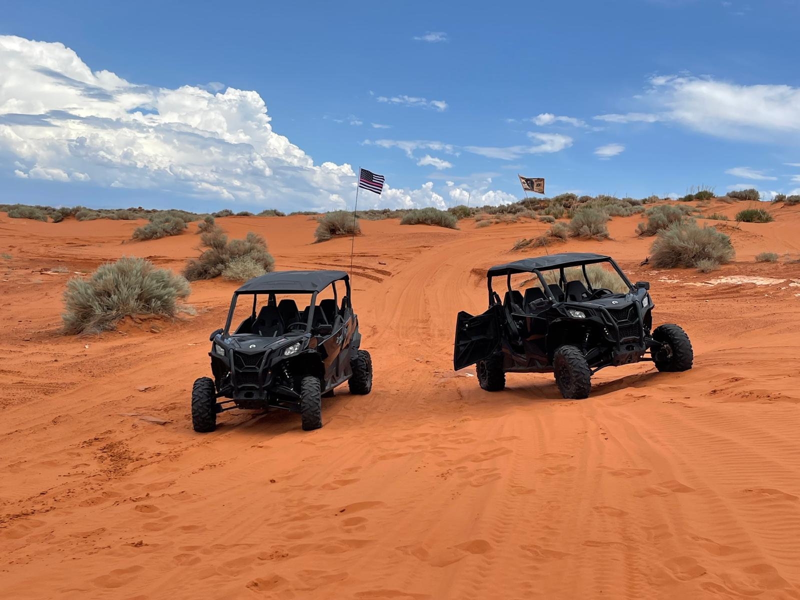
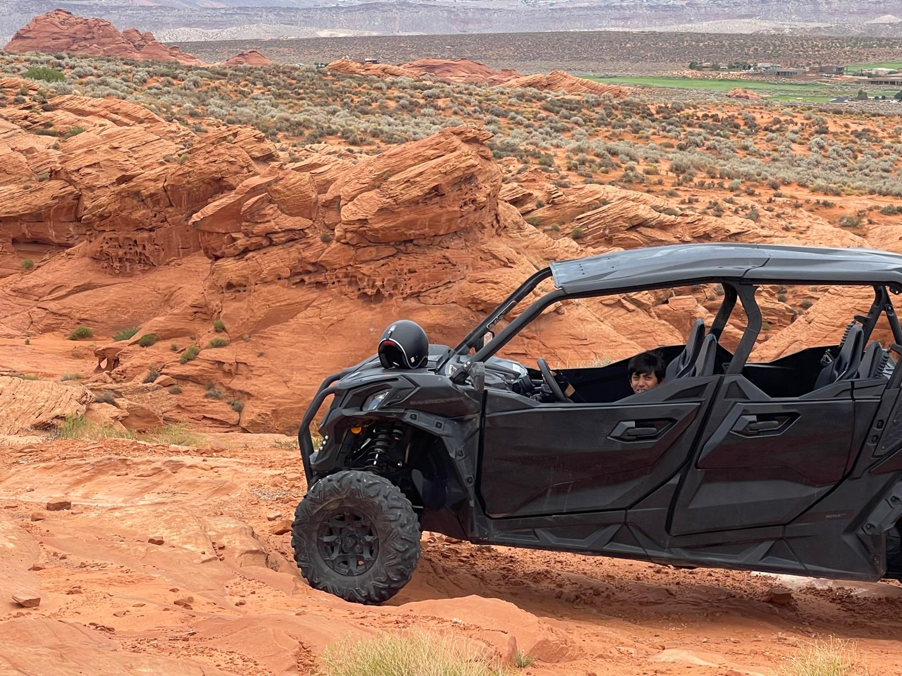
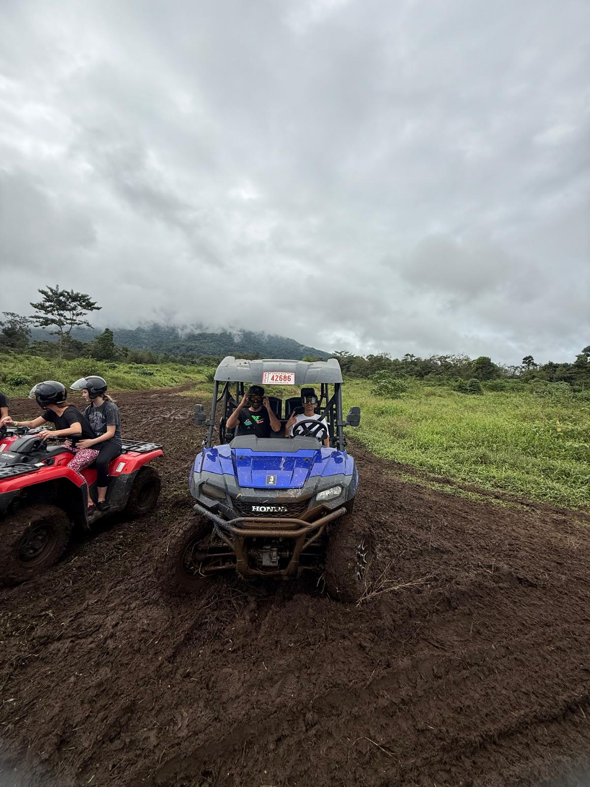
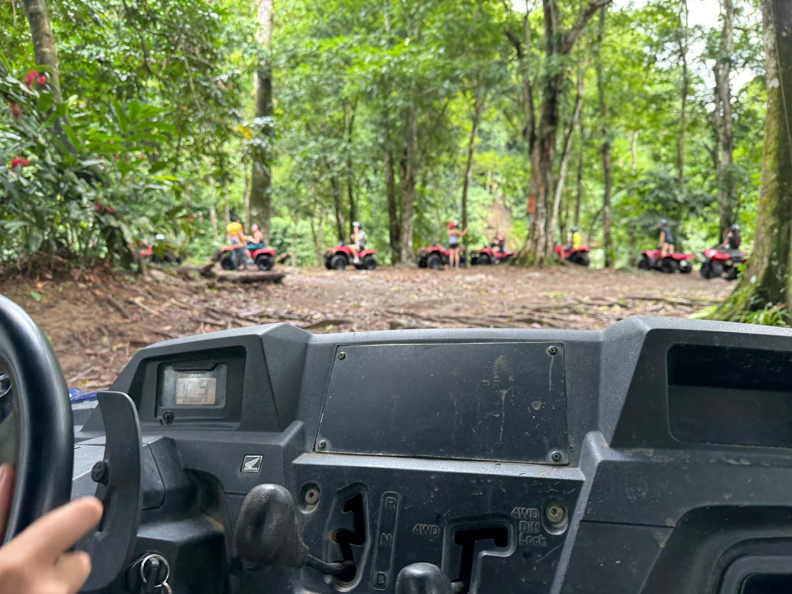
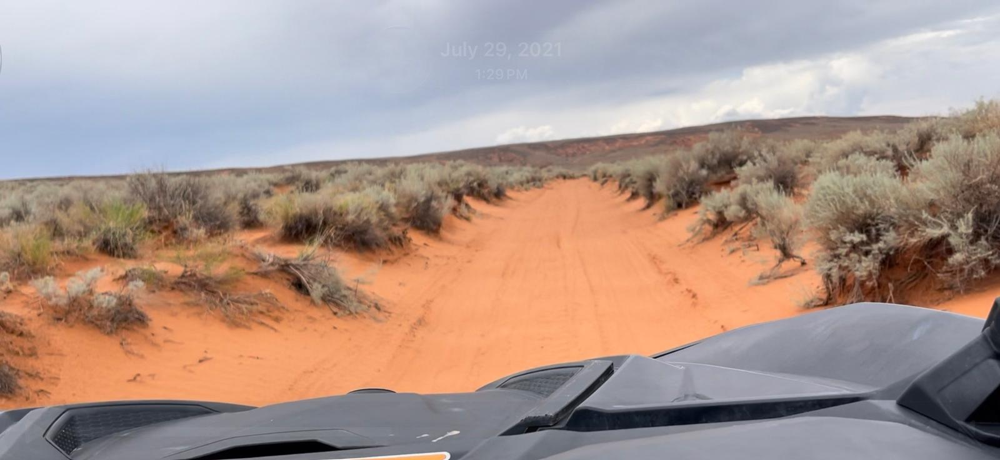
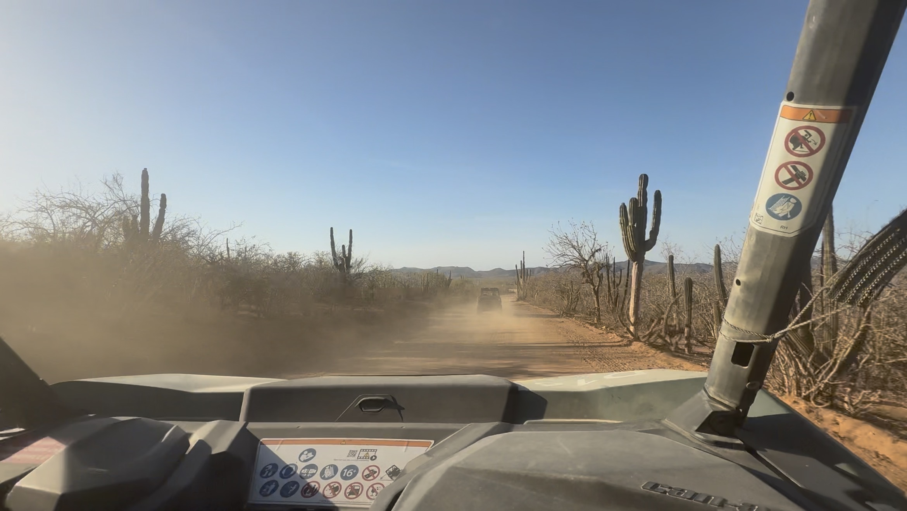
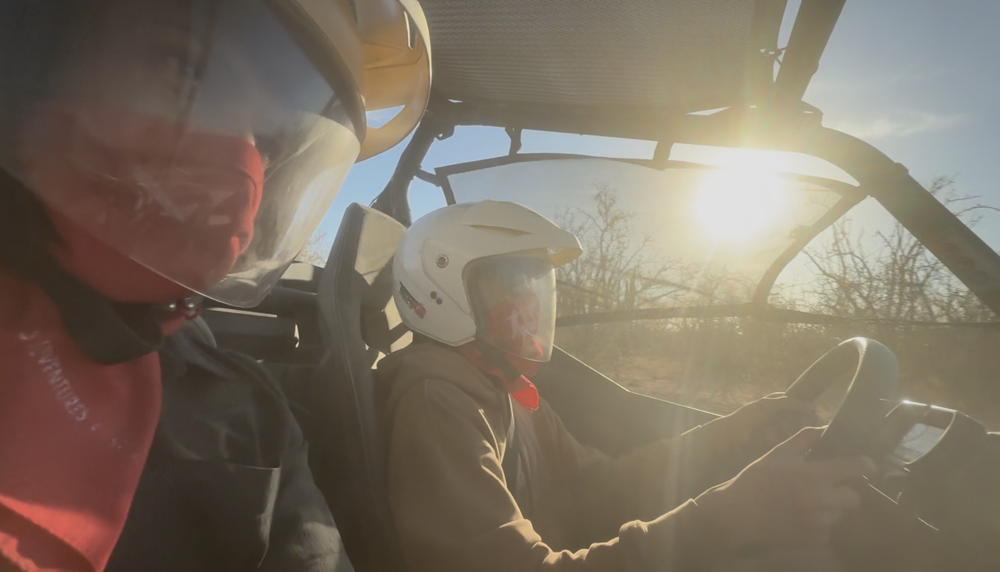
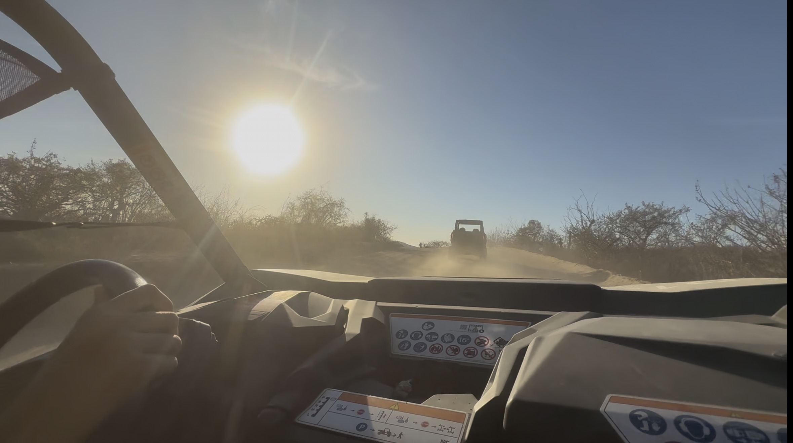
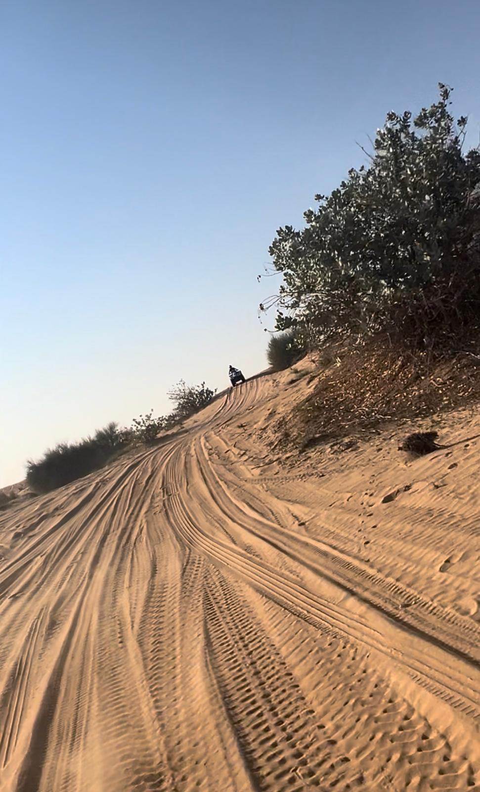

ATV & UTV Adventures Across 5 Terrains
Same thrill, completely different worlds under the wheels
There's something about strapping into an ATV or UTV and hitting unfamiliar terrain that just resets your brain. Over the past couple of years, I've ridden across five completely different landscapes — sand dunes, rocky canyons, tropical mud, arid desert, and endless golden sands. Each one tested the machine (and me) in a totally different way. Here's how they all compare.

1. Zion / Hurricane, Utah — The Rocky Gauntlet
This is my favorite. Hands down.
Located near Hurricane City, just outside Zion National Park, this riding area is a completely different beast. The terrain is rocky, rugged, and unforgiving. Your vehicle gets seriously tested here — steep climbs, sudden drops, tight narrows where one wrong turn scrapes the sides. It demands your full attention and rewards you with an adrenaline rush like no other.
What makes it even better is the solitude. Traffic is minimal, so you get long stretches where it's just you, the machine, and these incredible scenic views — red rock formations, desert canyons, and patches where the ground shifts from bone-dry to surprisingly wet. The contrast in textures keeps every turn interesting.



Quick Take
- Terrain: Rocky, narrow trails with dramatic elevation changes
- Vibe: Quiet, scenic, challenging — a rider's paradise
- Watch out for: Steep drops and narrow passages that test your vehicle's limits
2. Costa Rica — The Jungle Mud Run
Forget everything you know about ATV riding — Costa Rica throws all of it out the window. This is pure jungle chaos.
The terrain is thick mud, dense vegetation on both sides, and trails that feel like they were carved out of the rainforest floor. We even did a river crossing on the UTV, which was equal parts terrifying and exhilarating. The lush greens are absolutely stunning — you're riding through a living, breathing ecosystem.
But fair warning: you will get filthy. Mud splashes everywhere — your shoes, your clothes, your face. By the end of the ride, you look like you crawled through a swamp. And honestly? That's half the fun.




Quick Take
- Terrain: Muddy jungle trails with river crossings
- Vibe: Wild, immersive, nature-soaked adventure
- Watch out for: Wear clothes you don't mind destroying — everything gets caked in mud
3. Pismo Beach, California — The Sand Dune Playground
Pismo Beach is one of the largest ATV/UTV riding areas I've seen. We're talking miles and miles of open sand dunes stretching as far as the eye can see. The collection of vehicles here is massive and high-end — polished RZRs, Can-Ams, custom-built rigs — it feels like a showroom on sand.
The riding itself is a blast. The dunes are wide, the terrain is forgiving, and there's plenty of room to open up the throttle. But there's a trade-off: the traffic is heavy. You're constantly sharing space with other riders, and the air reeks of gasoline. It's loud, busy, and not exactly serene — but if you want raw horsepower on sand with an impressive fleet of machines around you, Pismo delivers.
Quick Take
- Terrain: Soft sand dunes, wide open
- Vibe: High-energy, crowded, gear-head paradise
- Watch out for: Heavy traffic and gasoline fumes everywhere
4. Los Cabos, Mexico — Desert Meets the Sea
Los Cabos offers a really interesting mix. You start with a stretch of beachside driving — ocean breeze, sand under the tires — and then the terrain shifts dramatically into full desert mode. Cacti everywhere, dry cracked earth, and that hot Mexican sun beating down relentlessly.
The biggest challenge here is visibility. The desert terrain kicks up enormous dust clouds, and with the bright sun in your eyes, it becomes genuinely hard to see what's ahead. You learn to keep your distance from the rider in front of you real quick. The dry air coats your throat and the dust settles on everything — goggles are non-negotiable here.





Quick Take
- Terrain: Beach sand transitioning to arid desert with cacti
- Vibe: Hot, dusty, scenic contrast between ocean and desert
- Watch out for: Dust clouds and blinding sun — keep your goggles tight
5. Dubai — The Endless Golden Desert
Dubai's desert is exactly what you picture: endless golden sand stretching to the horizon in every direction. The dunes are smooth, rolling, and vast. It's a completely different scale compared to anywhere else I've ridden.
The sun is intense — it shines straight into your eyes for most of the ride — but the terrain itself is forgiving. The sand is soft and the slopes are gradual, making this a great spot for beginners or anyone looking for a more relaxed ride. It's less about technical challenge and more about the sheer experience of being in the middle of a desert with nothing but sand and sky around you.



Quick Take
- Terrain: Soft rolling sand dunes, vast and open
- Vibe: Beginner-friendly, scenic, expansive
- Watch out for: The sun — bring sunscreen and polarized eyewear
Final Thoughts
Five rides, five completely different worlds. If I had to rank them for pure riding thrill, Utah wins every time — the terrain demands respect and the scenery is unmatched. Costa Rica is the wildest experience overall. Pismo is great if you love the social, high-energy scene. Los Cabos gives you variety in a single ride. And Dubai is perfect for a first-timer or someone who wants to enjoy the ride without white-knuckling the steering wheel.
No matter where you ride, the advice is the same: wear what you don't mind ruining, bring eye protection, and don't be afraid to push the throttle a little harder than you think you should.